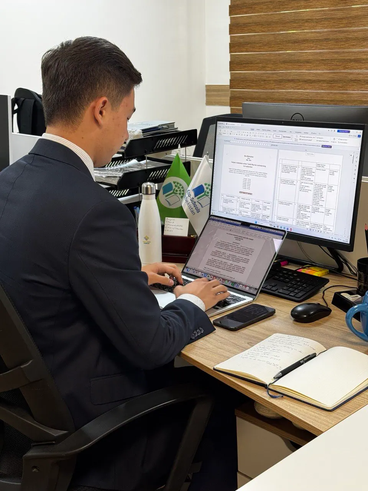
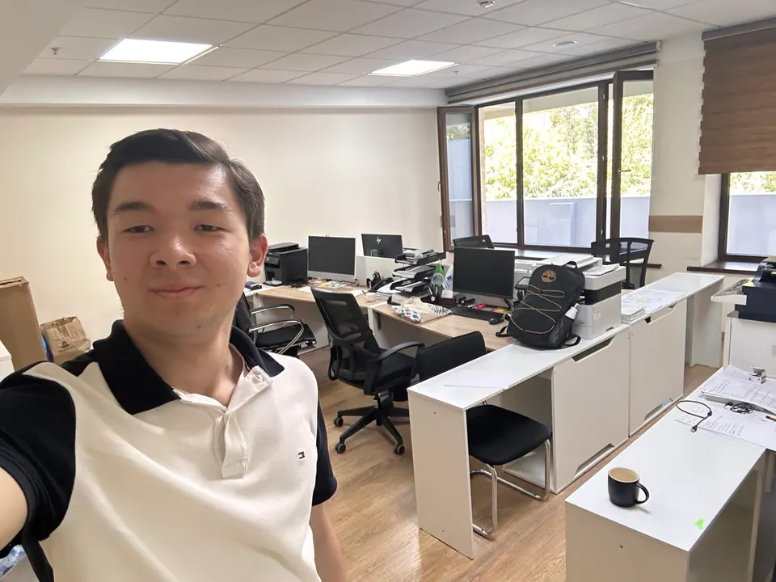
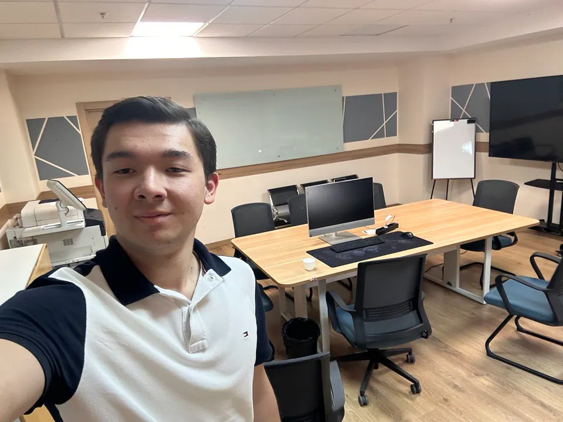
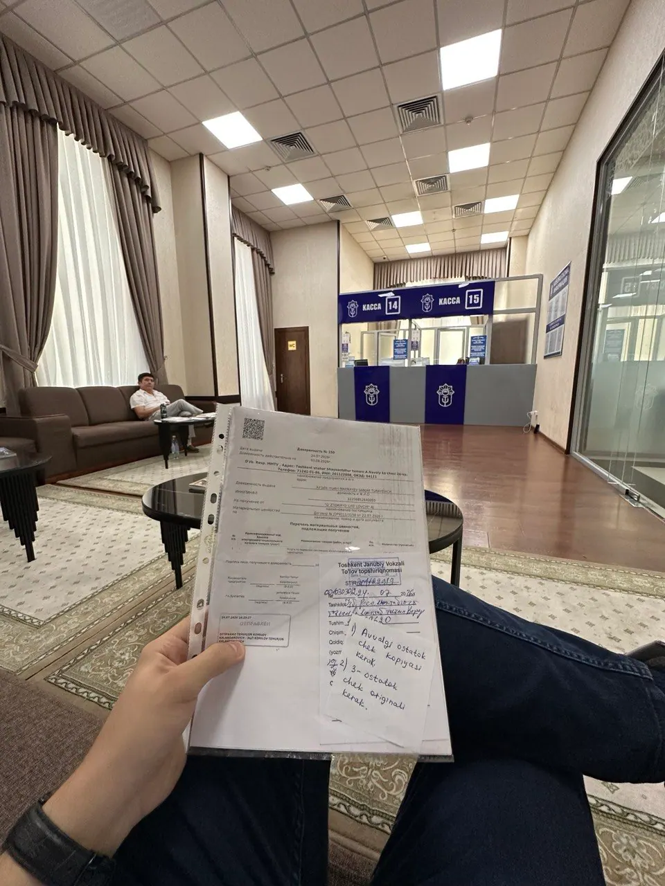
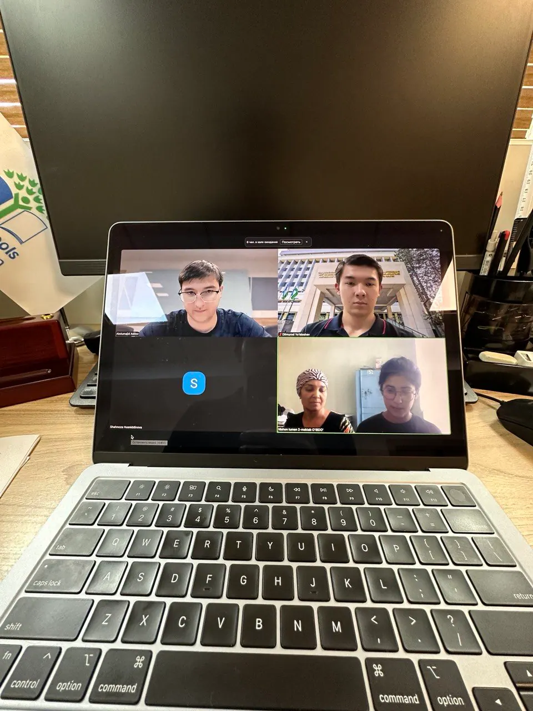

Ministry Internship
International Relations Department · Ministry of Preschool and School Education
- Role
- Intern, International Relations Department
- Organization
- Ministry of Preschool and School Education
- Dates
- Jun – Aug 2026


In summer 2026, I interned in the International Relations Department of the Ministry of Preschool and School Education, the only high-school student to do so. I drafted official letters for the ministry’s leadership, helped organize high-level meetings, and supported the ministry’s climate programs.
International Relations Department
Learning the language of diplomacy
Interned at the Ministry of Preschool and School Education at the International Relations Department, where I deepened my understanding of IR and developed my organizational skills. My job was to write drafts of letters to ministries such as the Ministry of Foreign Affairs, to the Presidential Administration, to the embassies, and to the international organizations. The senior officers and relevant units decided the ministry’s position; I prepared the drafts with the correct format, addressee block, the reference to the incoming document, and the legal citations and terminology, in Uzbek, Russian, or English, ready for signature by the First Deputy Minister or the Minister. Every draft was reviewed before signing. With little guidance, I learned the ministry’s letter style by studying its archive. My first draft matched the ministry’s style, and my supervisor asked how I had learned it. After that, I was trusted with more tasks and data. I also helped organize the ministry’s meetings, including one with the Ambassador of France.
- Official lettersDrafted letters in Uzbek, Russian, and English to ministries, embassies, and international organizations, formatted for Minister-level signature.
- High-level meetingsHelped organize ministry meetings, including one with the Ambassador of France.
- Eco-Schools dataCleaned messy Eco-Schools data in a single afternoon using digital tools and AI.
- Climate eventsSupported two eco camps during the internship, then helped organize RCOY Central Asia in September at the organizers’ request.


Outside of my duties during the internship, I helped the ministry with the organization of climate-related work such as Eco-Schools Uzbekistan, because I was involved with them before, and because, coming from a farming family, I care about climate. When the data of the Eco-Schools were messy and not accurate, with many errors, I decided to fix that. Using digital tools and AI, I cleaned it in one afternoon. During the internship, we organized two eco camps, and in September the ministry asked me to help organize RCOY Central Asia.






Gallery
More moments

